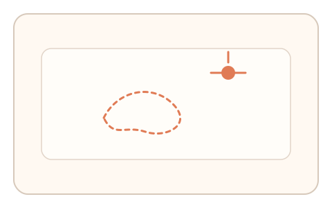
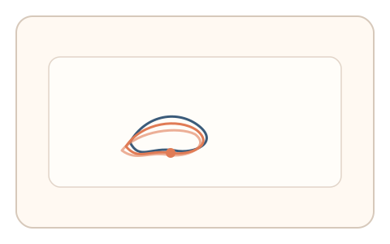
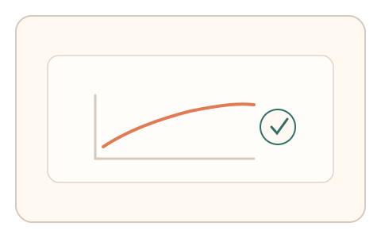

#120
D：单底座 × 单信号 × 自适应/短序列（视觉时域）
已扩展
残影衰减阶梯
高对比图形短闪后进入空白，用户在残影衰减中逐级确认边界，记录衰减曲线与起笔延迟。
概念原文
高对比图形短闪后空白，用户在残影衰减过程中逐级描摹/确认“刚可感知”的边界，记录衰减曲线与起笔延迟，并与个体基线对比。
把残影衰减曲线本身作为验证信号而非识别内容。
研究背景
残影会随时间衰减，用户对“刚可感知”的边界存在稳定阈值与延迟特征。通过阶梯式确认残影强度，可形成个体化的时域信号。
核心机制
- 短闪高对比图形并进入空白背景。
- 用户按阶梯确认残影边界位置。
- 记录起笔延迟与衰减曲线。
- 与个体或群体基线进行比对。
用户流程
- 步骤 1：用户看到高对比图形短闪。
- 步骤 2：在空白中逐级确认残影边界。
- 步骤 3：系统分析衰减曲线并判定。
判定信号
残影衰减曲线
真实用户的残影可感知强度随时间稳定衰减。
起笔延迟
感知到残影边界存在稳定的延迟分布。
判定逻辑
衰减曲线与延迟需落在人类分布区间；过度平滑或无衰减判异常。
对抗面
- 脚本固定衰减曲线并机械确认
- 重放真实用户的衰减序列
防御与缓解
- 随机化残影形状与闪现强度
- 引入轻微噪声降低模板化
- 叠加反应时与停顿信号
可达性与风险
提供更慢衰减与替代任务，避免对视觉敏感用户造成负担。
- 残影强度不足导致误判
- 设备亮度差异影响衰减曲线
可视化状态

状态 1：短闪残影
高对比图形短闪后进入空白。

状态 2：阶梯确认
逐级确认残影边界。

状态 3：衰减判定
比较残影衰减曲线与延迟。
参考资料
Afterimage
说明残影现象与衰减规律。
Visual adaptation
说明视觉系统对刺激的衰减与适应。